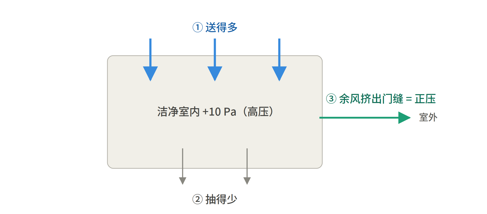
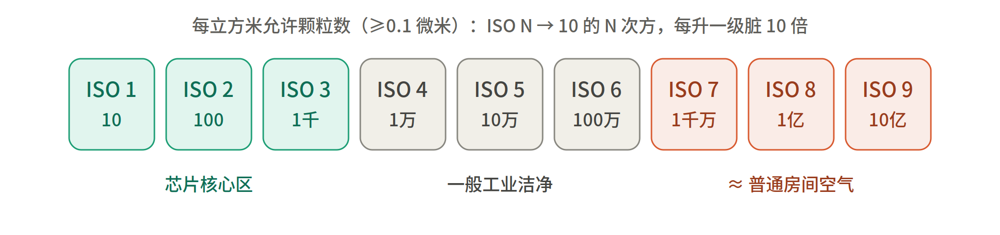
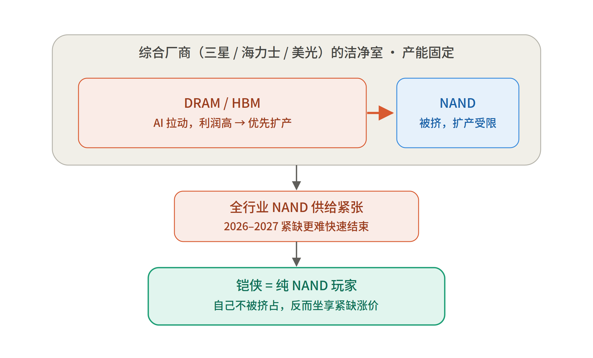
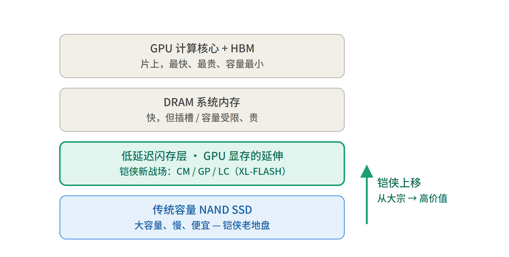
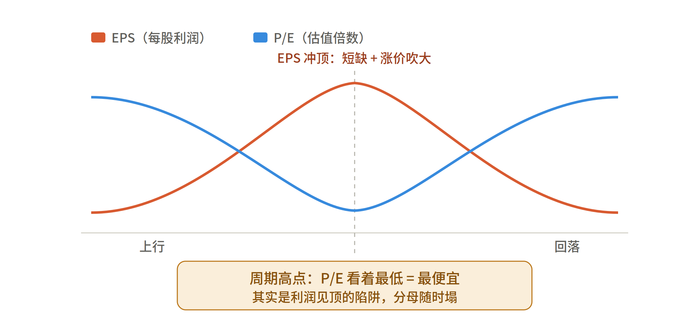
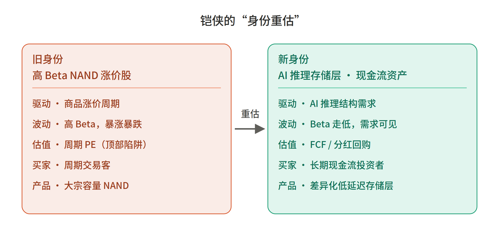
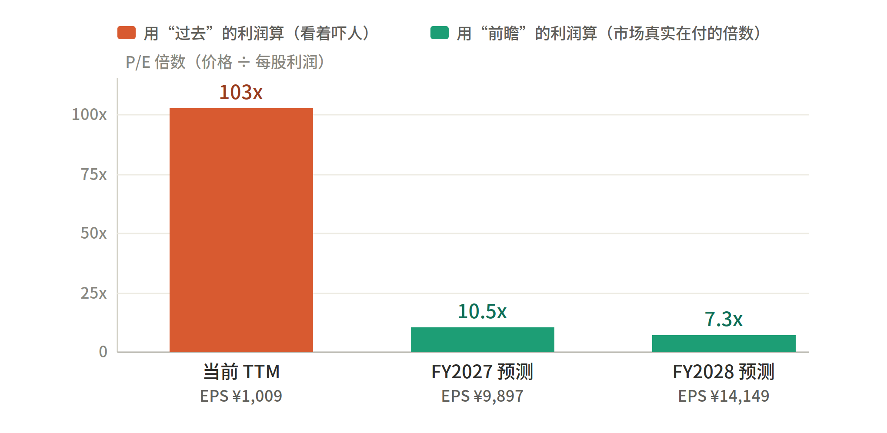
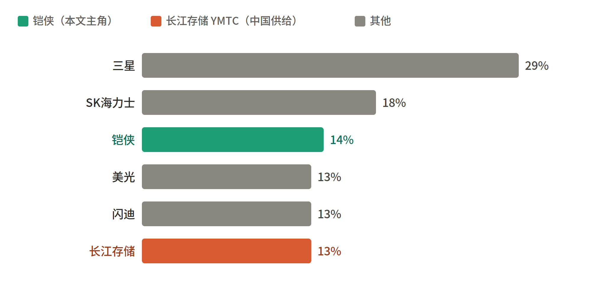

铠侠（Kioxia）投资逻辑与存储产业
费曼式系统笔记
从洁净室、AI 存储层，到周期估值与现金流重估
整理自一次费曼式问答对话 · 2026 年 6 月
含 8 张重制示意图与 7 张对比表 · 仅供学习研究，不构成投资建议
导读
这份文档把一次围绕铠侠（Kioxia）的费曼式问答，系统沉淀成一本可反复查阅的小手册。起点是一份券商深度报告（JPM 把铠侠目标价上调到 155000 日元），但我们没有停留在结论，而是把每一个被带出来的知识点逐一拆开：芯片厂的洁净室到底是什么、ISO 洁净等级怎么读、铠侠的 AI 存储产品线如何卡位、为什么周期股在高点反而显得便宜、PE 一百倍到底贵不贵、以及中国供给（长江存储）会不会把这套多头故事打穿。
内容不按聊天先后顺序，而是重新梳理成四个递进的部分：先打底（怎么造芯片），再认人（铠侠是谁、靠什么重估），然后学定价（周期股估值的反直觉），最后看风险（反方观点与中国变量）。每个部分都遵循同一个讲法——先用大白话和比喻讲清「是什么、为什么」，再上数据和术语；适合对比的内容用表格呈现；对话里出现过的每一张示意图都重新制作并嵌入对应段落旁。
阅读提示：带「图 X」的示意图是理解每一节的钥匙，建议结合正文一起看；文末附完整数据来源与一句话逻辑链总结。本文所有市场数据均为对话发生时（2026 年 6 月）的快照，仅供学习，不构成任何投资建议。
目录
结语 把知识点串成一条投资逻辑链 17
数据来源与说明 17
第一部分 芯片是怎么造出来的：洁净室与存储制造基础
要理解铠侠的供给逻辑，得先知道存储芯片是在什么环境里造出来的。这一部分回答四个最基础的问题：洁净室是什么、空气怎么滤干净、气压怎么控制、洁净度怎么分级。
1.1 什么是洁净室
芯片上的线路只有几纳米宽，而一粒灰尘大概几微米——相当于一块巨石砸在马路上。一粒灰落在晶圆上，那块芯片就直接报废。所以芯片必须在「洁净室」（Cleanroom / 无尘室）里制造：空气经过反复过滤、室内保持恒温恒湿、工人穿全身包裹的「兔子服」。
最关键的一点：洁净室极贵、极慢。一座先进存储厂的洁净室要花上百亿、建好几年。所以「洁净室面积」= 产能，是一种稀缺且固定的资源——造了 A 就没法造 B。这一点是后面理解「DRAM/HBM 挤占 NAND 产能」的钥匙。
1.2 HEPA / ULPA：把空气滤到几乎为零
洁净室靠高等级的空气过滤器把尘埃滤掉。两个常见等级：
HEPA（高效空气过滤器）：对 0.3 微米颗粒，拦截效率 ≥ 99.97%。
ULPA（超高效空气过滤器）：更严一档，对 0.12 微米颗粒，效率 ≥ 99.999%。芯片厂最干净的区域用的就是 ULPA。
一个反直觉的点：过滤器不是简单的「筛子」，而是一层杂乱交错的极细纤维，靠三种机制抓颗粒——大颗粒太重、跟不上气流转弯而「撞」上纤维（惯性撞击）；中颗粒擦过纤维「被拦住」（拦截）；极小颗粒太轻、被空气分子撞得乱飘，乱飘中「碰上」纤维（扩散）。
所以最难抓的恰恰是中间尺寸约 0.3 微米那一档——它撞不动、也难拦，又飘得不够乱。比它大、比它小的反而都更好抓。这正是 HEPA 标准偏偏用 0.3 微米来定义的原因：拿「最难抓的那一档」当及格线，比它容易的自然都能过。
1.3 正压：让空气只出不进
洁净室还要防止脏空气从缝隙渗进来，办法是把室内气压做得比室外高一点，也就是「正压」。打个比方：把洁净室想象成一个一直在轻轻打气的气球——内部气压高，一旦有门缝、孔隙，气是往外漏的；脏空气想钻进来，是逆着这股外吹气流走的，根本挤不进。

图 1 正压的形成：送风量大于回风量，多出来的「余风」从门缝向外挤，形成室内高压
1.4 气压是怎么升高的
升高气压不是装个打气泵硬充，而是精确控制「送风 > 回风」这个差额，让房间始终处于轻微的、持续往外漏气的状态。这套系统有几个零件：
送风端（往里打气）：空调箱带大功率风机，把空气经 HEPA/ULPA 过滤后，从天花板的 FFU（风机过滤单元）大量、持续地压入。
回风端（放气，但故意放得少）：墙脚/地面的回风口把空气抽回循环，但抽回的量被刻意设定得小于送入量。
余量 = 正压：送 100、回 90，多出来的 10 出不去，只能从门缝、传递窗往外溢，把室内气压顶得比室外高。
闭环稳压：压差传感器实时测「室内比室外高多少帕」，反馈给变频风机和风阀微调；门上还装余压阀，压力过高时自动泄一点。
两个数感：这个压差其实非常小，相邻房间之间通常只有 5–15 帕斯卡；而大气压本身约 10 万帕，正压只是它的万分之一左右——只要「够让空气稳定往外走、不倒灌」即可。芯片厂还会做成阶梯式正压：核心光刻区 > 洁净走廊 > 室外，一级压一级，空气只能从最干净处流向最脏处，绝不回头。
1.5 洁净度怎么分级：ISO 14644-1
洁净度用国际标准 ISO 14644-1 衡量，全称《洁净室及相关受控环境 第 1 部分：按粒子浓度划分空气洁净度等级》。它的逻辑极其漂亮，记一句就够：
ISO 几级，每立方米空气就允许 10 的几次方个颗粒（按 ≥0.1 微米算）；等级数字越小越干净，每升一级就脏 10 倍。

图 2 ISO 14644-1 洁净度阶梯：从 ISO 1（最干净）到 ISO 9（≈普通房间空气），每级颗粒数 10 倍递增
中文资料里常见的「百级」「千级」洁净室，是美国旧标准 FED-STD-209E 的叫法（按每立方英尺颗粒数算）。存储芯片厂的核心光刻区通常要做到 ISO 1–3 级，这也是为什么洁净室那么贵——级别每严一档，过滤、换气、维护成本都呈指数级上升。下表是速查与新旧标准对照：
| ISO 等级 | 每 m³ 颗粒上限 (≥0.1µm) | 旧标准 (FED-STD-209E) | 典型用途 |
| ISO 1 | 10 | — | 最尖端研究 |
| ISO 3 | 1,000 | Class 1 | 芯片核心光刻区 |
| ISO 5 | 100,000 | Class 100（「百级」） | 芯片关键工艺 / 无菌 |
| ISO 6 | 1,000,000 | Class 1000（「千级」） | 一般洁净制造 |
| ISO 9 | 1,000,000,000 | — | ≈ 普通房间空气 |
来源：ISO 14644-1 标准；FED-STD-209E 旧标准对照（行业通用换算）。
第二部分 铠侠是谁：纯 NAND 玩家与两道「重估闸门」
券商报告说铠侠这一次「确实出现了新东西」，靠的是回答两个过去没说清的问题：供给能不能可见、AI 推理能不能让它的存储变成系统关键。这一部分先纠正一个常见误区，再拆解这两道「重估闸门」。
2.1 先纠正一个误区：铠侠 = 纯 NAND 玩家
铠侠（原东芝存储）是一家几乎只做 NAND 闪存的公司，它基本不做 DRAM，更不做 HBM。这一点非常重要，因为它会直接改变你对「DRAM/HBM 挤占洁净室」那句话的理解方向。
存储产品大致分两类：NAND 是非易失性的「数据仓库」（U 盘、SSD、数据中心存储）；DRAM 是易失性的「高速工作台」（内存条），HBM 则是把多层 DRAM 堆叠起来、专供 AI 的高带宽内存。同时做 DRAM 和 NAND 的是三星、SK 海力士、美光；铠侠和闪迪则是纯 NAND 阵营。
2.2 供给闸门：洁净室被 DRAM/HBM 挤占，反而利好铠侠
报告里有句话：「DRAM/HBM 优先挤占洁净室」。很多人第一反应是「那 NAND 产能不就被挤小了，对铠侠是坏事？」——方向恰恰反了。
被挤占洁净室的，不是铠侠（它没有 DRAM/HBM 业务），而是那些同时做两种产品的对手。AI 让 HBM/DRAM 利润高得离谱，于是三星、海力士、美光把宝贵的洁净室面积和资本开支优先砸向 DRAM/HBM，留给 NAND 的扩产被压缩。

图 3 供给闸门的因果链：综合厂商把固定的洁净室让给 DRAM/HBM → 全行业 NAND 扩产受限 → 纯 NAND 的铠侠坐享紧缺涨价
落到铠侠身上，结论要反过来：全行业 NAND 扩产被压住 → 供给紧张 → 价格上行；而铠侠作为纯 NAND 玩家，自己产能不被挤占，却能享受整个市场的紧缺涨价。这正是报告说「让 2026–2027 年紧缺更难快速结束」的含义——紧缺持续 = 铠侠多赚。别人忙着造 DRAM/HBM 不造 NAND，专心造 NAND 的铠侠就成了少数供货商。
2.3 需求闸门：AI 推理把铠侠推向「GPU 系统外侧的低延迟存储层」
报告第二道闸门是「AI 推理」，原文说 CM、GP、LC 和 XL-Flash 路线「把铠侠从容量 NAND 推向 GPU 系统外侧的低延迟存储层」。先建立一个核心画面：AI 服务器里的存储不是一锅烩，而是按「快慢 / 贵贱」分层的——最快最贵的贴着 GPU，最慢最便宜的在最外圈。铠侠原来只在最底下卖「大宗商品」，AI 把它往上拽了一层。

图 4 AI 服务器内存层级：铠侠正从最底层的「容量 NAND」上移到「低延迟闪存层」，从大宗供应商变成高价值供应商
这串缩写不是泛指，而是铠侠四个具体的产品 / 技术，各自卡进 AI 推理里一个不同的痛点。可以理解成「一项底层技术（XL-FLASH）+ 三条产品线（CM / GP / LC）」：
| 名称 | 是什么 | 解决的 AI 痛点 | 对应架构 |
| XL-FLASH | 底层 SLC 存储级内存技术，读延迟 3–5 微秒（普通 3D NAND 为 40–100 微秒） | 为上层产品提供超低延迟「地基」 | GP 系列的基础 |
| GP 系列 | 基于 XL-FLASH 的超高 IOPS SSD | 把 SSD 直接变成 GPU 显存的延伸 | 英伟达 Storage Next |
| CM 系列 | 高带宽 TLC SSD | KV Cache 太大、DRAM 装不下时扩展显存池 | 英伟达 CMX（上下文存储） |
| LC 系列 | 大容量 SSD | RAG 大规模向量数据库的存储 | RAG 服务器层 |
几个名词补充：KV Cache 是大模型推理时缓存的「前文记忆」，上下文越长、对话越久就越大，大到 DRAM 装不下时就要往快存储里挪；RAG（检索增强生成）需要又大又快的向量数据库；Storage Next 是英伟达的架构，让 SSD 不再是外围存储、而直接成为 GPU 显存的延伸，因此要求超低延迟与超高 IOPS。
来源：铠侠投资者材料及行业媒体（ServeTheHome、StorageReview 等），经网络检索整理；XL-FLASH 延迟数据为行业公开资料。
利润逻辑（为什么这叫「闸门」）：老地盘的容量 NAND 是大宗商品——拼价格、毛利薄、强周期；新层卖的不是容量，而是「能不能喂饱 GPU」的性能差异化能力，客户绑定英伟达生态与超大规模数据中心，毛利更高、更黏、周期性更弱。这条逻辑和「涨价 / 供给」那条是两件事：前者是行业 β（NAND 整体更值钱），后者是个体 α（铠侠从大宗供应商被重估为 AI 高价值供应商）。
第三部分 怎么给铠侠定价：周期股的估值陷阱与重估
报告说铠侠「最难定价的地方，是利润表太好，好到让传统估值方法开始失真」。这一部分讲清楚周期股估值的反直觉，以及 JPM 把它重估的逻辑。
3.1 为什么「存储股在周期高点看起来很便宜」
这是周期股最经典的「估值陷阱」。一句话：P/E 看着低，不是因为股价便宜，而是因为分母（每股利润 EPS）被周期临时吹大了。
拆开公式：P/E = 股价 ÷ EPS。普通公司 EPS 稳，低 P/E ≈ 便宜。但存储股的 EPS 在周期里剧烈起伏：周期高点会同时发生短缺 → 涨价 → 量价齐升 → 毛利率飙到历史高位，再叠加库存周期（客户怕缺货抢着囤货，透支性放大需求）。于是 EPS 被顶到一个不可持续的虚高，这时股价虽高，P/E 算出来反而是个小数字，看着特别「便宜」。

图 5 周期股估值陷阱：EPS（红）冲顶时，P/E（蓝）正好踩到谷底——「看起来最便宜」的点，恰恰是利润见顶、最危险的时刻
陷阱怎么兑现：高利润引来扩产，资本开支跟上、产能释放；客户开始削单去库存；价格回落 → 毛利塌 → EPS 暴跌。这时分母缩得比股价还快，于是出现反直觉现象——股价在跌，P/E 却不降反升。你在「低 P/E」时买进，结果买在了利润和股价的双顶。
所以周期股的估值直觉是反的，下表对比一目了然：
| 普通成长股 | 周期股（如存储） | |
| 低 P/E | ≈ 便宜，常是买点 | 多在利润见顶时，常是危险卖点 |
| 高 P/E | ≈ 贵 | 多在利润见底 / 上行早期，常藏机会 |
| 该看什么 | 当前 P/E 基本够用 | 必须看前瞻 P/E + 周期位置 |
| 操作直觉 | 低 P/E 买、高 P/E 卖 | 反着来：高 P/E 买、低 P/E 卖（彼得·林奇） |
3.2 身份重估：从「高 Beta NAND 涨价股」到「AI 推理存储层现金流资产」
这句话描述的是铠侠的一次「身份重估」——市场给它贴的标签变了，定价它的整套逻辑也跟着变。先拆词：
Beta（β）：衡量一只股票「波动放大倍数」的指标，对某个东西有多敏感、跟着晃得多狠。高 Beta = 暴涨暴跌。「高 Beta NAND 涨价股」= 一张押注 NAND 涨价的高杠杆周期筹码，赌的是商品价格。
现金流资产：靠「能稳定产出现金、并把现金还给股东」来定价的资产。高 Beta 周期股像赌桌上的一手牌；现金流资产像一座收费桥，每年稳吐过路费（FCF），再以分红、回购塞回你口袋。市场愿意给后者更高、更稳定的倍数。

图 6 铠侠的「身份重估」：从商品涨价驱动、高 Beta、周期 PE 估值的筹码，变为 AI 结构需求驱动、按现金流估值的资产
「变成」两个字，变的不是铠侠的工厂，而是市场给它的定价方法。下表把两种身份并排对比：
| 维度 | 旧身份：高 Beta NAND 涨价股 | 新身份：AI 推理存储层现金流资产 |
| 驱动力 | 商品涨价周期 | AI 推理结构性需求 |
| 波动性 (Beta) | 高 Beta，暴涨暴跌 | Beta 下降，需求更可见 |
| 估值方法 | 周期 PE（易陷顶部陷阱） | FCF / 分红回购资本化 |
| 投资者 | 周期交易者 | 长期现金流投资者 |
| 产品定位 | 大宗容量 NAND | 差异化低延迟存储层 |
重估要成立，需同时满足三件事：①需求可见（长期协议 LTA = 第一道闸门）→ 利润锁进合同、Beta 下降；②需求有结构性、差异化（AI 推理存储层 = 第二道闸门）→ 摆脱商品属性；③现金真还给股东（FCF + 分红回购）→ 才配得上「现金流资产」的估值框架。三件事都兑现，市场才敢把它从「周期顶、随时塌」的折价筹码，重新定价成「AI 基础设施里一块持续产现金的资产」。
3.3 PE 100 倍怎么理解：尾随 vs 前瞻
看行情时铠侠 PE 显示约 102 倍，第一反应是「太贵了」。但这恰恰是上一节的另一端：这个 PE 是用「过去 12 个月（TTM）的利润」算的，而铠侠现在的利润还趴在周期低位、刚开始往上爬。
它 TTM 每股收益只有约 1,009 日元，但 JPM 预测 FY2027 为 9,897 日元、FY2028 为 14,149 日元——未来两三年利润要翻 10 倍以上。市场不是在为「过去那点利润」付 102 倍，而是在为「马上要爆发的利润」定价。把分母换成前瞻利润，吓人的 100 倍立刻就塌：

图 7 同一只股票，用「过去」利润算 PE 约 103 倍（看着吓人），换成 FY2027/FY2028 的前瞻利润，只有约 10.5 / 7.3 倍
| 口径 | 每股利润 | P/E | 说明 |
| 当前 TTM | ¥1,009 | ≈ 103 倍 | 利润还趴在周期低位，「显贵」是假象 |
| FY2027 预测 | ¥9,897 | ≈ 10.5 倍 | 利润若兑现，倍数骤降 |
| FY2028 预测 | ¥14,149 | ≈ 7.3 倍 | 接近周期高点，反而「看着最便宜」 |
来源：铠侠现价 103,850 日元、PE(TTM) 102.91、EPS(TTM) 1,009.15，为富途牛牛行情（2026/06/25 东京收盘，用户截图）；FY2027/FY2028 EPS 为 JPM 预测（用户提供报告截图）。
这正好和「周期高点看着便宜」那一课对得上，只是铠侠站在周期的另一头：现在是上行早段，利润还没跟上，尾随 PE 天然显贵；真到利润兑现的 FY2028，若价格不变，尾随 PE 会自动掉到约 7 倍，那时才轮到「看着最便宜」的危险时刻。结论：对周期股，光看 TTM 的 PE 几乎没用，要看前瞻 PE + 周期位置。
再看 JPM 这次重估的精髓（下表）：目标价从 8 万 → 15.5 万日元，涨的不是靠利润预测大改（FY2027 EPS 只从 9158 微调到 9897），而是估值倍数从约 7 倍抬到约 11 倍——表里写得很直白：「重估主要来自倍数变化」「周期折价开始收窄」。这就是上一节那次「身份重估」的数字体现。
| 指标 | 原假设 | 新假设 | 投资含义 |
| 目标价 | 80,000 日元 | 155,000 日元 | 重估主要来自倍数变化 |
| 估值倍数 | 约 7 倍 P/E | 约 11 倍 P/E | 周期折价开始收窄 |
| FY2027 EPS | 9,158 日元 | 9,897 日元 | 上修幅度有限 |
| FY2028 EPS | 12,922 日元 | 14,149 日元 | 盈利中枢被小幅抬高 |
来源：JPM《铠侠深度更新》报告（用户提供截图，微信公众号 404K）。
两个冷静点（不构成投资建议）：①「前瞻 7–10 倍很便宜」有个大前提——那两年的利润预测得真兑现，而能不能兑现正是全部争议（长协够不够硬、AI SSD 能不能落地、中国供给会不会砸盘、毛利会不会均值回归）；若周期提前掉头，前瞻 EPS 会被下调，「便宜」立刻蒸发。②从行情看，这股技术面很「烫」：当日 +12.27%、振幅 9.56%（被「美光业绩翻倍」消息带飞），股价远站在所有均线上方，是一根近乎垂直的拉升——好的前瞻预期已被抢着 price in，前瞻 PE 便宜 ≠ 现在这个点位进场的赔率就好。
第四部分 反方与变量：这套故事可能错在哪
一份负责任的研究，必须把空头逻辑也讲清楚。Morningstar 和伯恩斯坦坚持传统周期框架，核心论据是：NAND 这个市场天生更分散、客户更敏感、供给一旦恢复毛利率就会回归。这一部分拆解最重要的变量——中国供给，以及反方的市场结构论。
4.1 中国供给冲击：主角是长江存储（YMTC），不是长鑫
先纠正一个高频混淆：长鑫（CXMT，长鑫存储 / 长鑫科技）主要做 DRAM，不是 NAND；NAND 这块，中国的主角是另一家——长江存储（YMTC）。两家名字很像，但分工不同。
| 长鑫（CXMT） | 长江存储（YMTC） | |
| 主营产品 | DRAM | NAND 闪存 |
| 在本报告里的角色 | 不是 NAND 供给主角 | 「中国供给冲击」的主角 |
| 最新 NAND 份额 | — | 约 13%（一年前 8%，营收同比 +445%） |
| 产能 | — | 约 13 万片/月 → 目标 15 万片；三期投产后规划 30 万片/月 |
| 上市状态 | 已启动 A 股 IPO（排在前面） | 母公司「长控集团」2025 年 5 月启动 A 股 IPO 辅导 |
| 技术 | — | Xtacking 4.0，232 层 TLC（294 层等效密度） |
长江存储正贴着铠侠往上爬：最近一季营收同比暴涨约 445%、份额从 8% 升到 13%，与铠侠（14%）、美光（13%）、闪迪（13%）挤在一起，四家死磕全球第三。Counterpoint 研究总监直言：若长江存储 IPO 拿到钱继续扩产，有望超过铠侠和美光、坐稳全球第三。这就是报告把它当成铠侠心头大患的原因——它不是远方小玩家，而是直接顶在铠侠身后的那一个。

图 8 全球 NAND 市场份额（最新一季）：铠侠（14%）与长江存储（13%）几乎贴在一起，正一同争夺全球第三
来源：Counterpoint（经证券时报等报道）；长江存储产能、三期与 IPO 信息综合自电子工程专辑、新浪科技、与非网等公开报道（2025–2026）。
4.2 为什么「中国供给冲击」专砸 NAND，而不是 DRAM
这正是反方框架的核心。NAND 这个市场天生更容易被中国捅破，原因有三：
行业更分散：DRAM 是三星、海力士、美光三家高度垄断、供给有纪律；NAND 集中度低得多，玩家有六七家，谁多挤进来一点，价格就容易被打乱。
不那么依赖最尖端设备：NAND 对 EUV 光刻这类被卡脖子的尖端制程依赖较低，所以即便长江存储被列入实体清单、买不到美系先进设备，靠堆叠层数 + 国产设备照样能扩产。
别人收、它逆势扩：三星、海力士、美光都把产能往利润更高的 HBM/高端 DRAM 倾斜，挤压了 NAND；长江存储正好趁这个空档逆势猛扩、抢份额。
三点合起来，就是报告说 NAND「更容易被中国供给冲击」的全部含义，也是反方看空铠侠长期毛利的核心论据。
4.3 HDD 与反方框架：NAND ≠ DRAM / HBM / HDD
反方那句「NAND 不是 DRAM，不是 HBM，也不是 HDD」，重点不在技术，而在市场结构。先说 HDD 是什么：HDD（Hard Disk Drive，机械硬盘）是靠金属盘片高速旋转、磁头读写的老式硬盘，和用 NAND 闪存、没有任何机械运动的 SSD 是两种技术。
但这里提 HDD，是把它当成一个「理想寡头市场」的标尺。这句话把 NAND 和三个「日子更好过的存储市场」对比，说 NAND 一个都不像：
不是 DRAM：三星、海力士、美光三寡头，供给有纪律。
不是 HBM：AI 时代的溢价宠儿，有强定价权。
不是 HDD：经过多年洗牌只剩希捷、西部数据、东芝三家，变成克制、不乱扩产、毛利稳定的理性寡头。
所以空头搬出 HDD 是想说：别指望 NAND 也能熬成那种和气生财的寡头格局——因为 NAND 玩家有六七家（还有逆势猛扩的长江存储），客户换供应商更容易、对价格更敏感。结论：供给一旦恢复，NAND 的高毛利就会「回归」（跌回正常水平），守不住 DRAM/HBM/HDD 那样的好日子。
4.4 哪只股票能买？IPO 进度与供应链
一个现实的坑：长江存储（YMTC）和长鑫（CXMT）目前都还没上市，买不到，所以你没法直接买到一只「长江存储」的股票。两个最新动向值得记：
长江存储母公司「长控集团」已于 2025 年 5 月启动 A 股 IPO 辅导（辅导机构中信证券 + 中信建投），长鑫科技的 IPO 排在更前面。未来一两年 A 股可能出现「中国存储双雄」的直接标的，值得持续盯。
在它们上市前，市场里能沾边的主要是给两家供货的 A 股设备 / 材料公司（产业链概念），公开报道提到的如有研新材（靶材）、盛美上海（清洗设备）、中科飞测（量测设备）等。
提示（不构成投资建议）：产业链概念股鱼龙混杂、和两家实际业绩的绑定程度差异很大，真要研究得逐个核对它对长江存储的收入占比和真实供货关系。本节仅为梳理公开信息、提供研究起点。
来源：长控集团 IPO 辅导备案信息（证监会网站，2025 年 5 月）；供应链公司信息综合自公开报道，仅供研究参考。
结语 把知识点串成一条投资逻辑链
回到最初那份报告，这一整套知识点其实可以串成一条线：
芯片在固定且昂贵的洁净室里造（Part 1）→ 综合厂商把洁净室优先让给更赚钱的 DRAM/HBM，NAND 全行业扩产受限、紧缺拉长，纯 NAND 的铠侠受益（供给闸门，Part 2）→ 同时 AI 推理把铠侠的产品从大宗容量 NAND 推上「GPU 外侧的低延迟存储层」，毛利更高、更结构化（需求闸门，Part 2）→ 这两道闸门若都打开，铠侠就从「高 Beta 涨价股」被重估为「现金流资产」，这正是 JPM 把估值倍数从 7 倍抬到 11 倍、目标价提到 15.5 万日元的依据（Part 3）。
而它现在 PE 一百倍，不代表贵，只代表利润还没赶上来；但「前瞻不贵」也不等于「现在这个位置不贵」，中间隔着「预测能不能兑现」和「追不追高」两道坎（Part 3）。最后，这套多头故事最大的变量是 NAND 天生分散、易被中国供给（长江存储）冲击、毛利可能均值回归（Part 4）——这也是反方坚持的传统周期框架。
一句话总结：铠侠正站在「被周期支配的涨价股」与「驾驭 AI 结构需求的现金流资产」之间的分水岭上；能不能跨过去，要逐季盯三张牌——长协是否更硬、AI SSD 认证是否落地、现金流是否真回到股东手里。
数据来源与说明
本文为学习笔记，所有数据为对话发生时（2026 年 6 月）的快照，不构成任何投资建议。主要来源如下：
原报告论点与「太长不看」七点：JPM《铠侠深度更新》（用户提供截图，微信公众号 404K）。
铠侠现价、PE、EPS(TTM)：富途牛牛行情，2026/06/25 东京收盘（用户截图）。
JPM 目标价、估值倍数、FY2027/FY2028 EPS 拆解：JPM 报告截图（用户提供）。
XL-FLASH 延迟、CM/GP/LC 产品定位、Storage Next/CMX/RAG：铠侠投资者材料及行业媒体（ServeTheHome、StorageReview 等），经网络检索整理。
长江存储份额、营收增速、产能、三期、IPO：Counterpoint（经证券时报等报道），及电子工程专辑、新浪科技、与非网、腾讯新闻等公开报道（2025–2026）。
洁净室、HEPA/ULPA、正压、ISO 14644-1：半导体制造与洁净室工程通用知识；ISO 14644-1 标准。
注：网络检索资料可能随时间更新，关键数据（尤其份额、产能、IPO 进度、股价与盈利预测）请以最新公开披露为准。